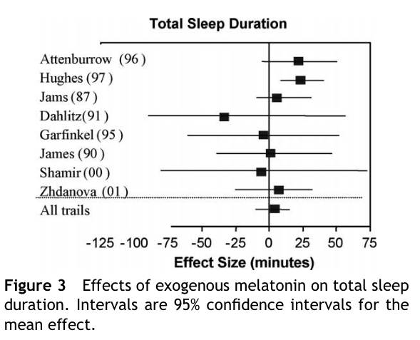
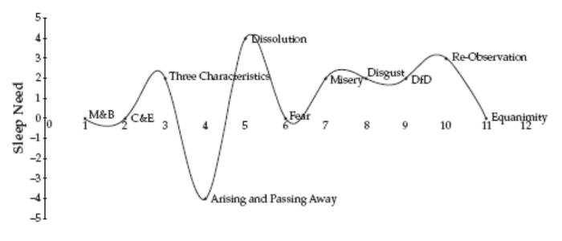

author: niplav, created: 2023-07-06, modified: 2024-10-24, language: english, status: notes, importance: 6, confidence: possible
Humans get around 80 years of life. How can that time be made to feel as long as possible?
Existing investigations are not well cited, don't consider trade-offs and costs or effect sizes, given that subjective time is all one has, it'd be good to have a reliable guide to lengthening it. Ethan 2023 is the best resource I currently know of, but a more comprehensive resource including effect sizes, costs and benefits appears worthwhile to create.
This is not about extending healthspan, either by prosaic or medical interventions, or curing aging, for overview into that see JackH 2020 and Ricón 2021.
The net present value of each intervention below was calculated after usually <30 minutes of research, often using made-up numbers as input. Take it neither seriously nor literally.
| Intervention | Net present value | State of evidence | Papers | Notes |
|---|---|---|---|---|
| Meditating 2.5 hours per day → Reduces sleep need | $33k | Poor, a single case study (n=7), and anecdotal reports; ~20 minutes of yoga don't change sleep duration | Kaul et al. 2010, Patra & Telles 2009 | Can also confer other benefits, but multiple hours of meditation per day could be risky. |
| Taking melatonin → Reduces sleep need | $2.6k | Data collected from two individuals (n=2), a meta-analysis | Gwern 2019, Niplav 2024, Brzezinski et al. 2005 | Low risk, but plausibly no effect (or increase of sleep duration) |
Harsimony 2021 argues that we should reduce sleep need, pointing out that these ~30% of our lives might be better spent on other activities, be they conscious leisure or work.
Beliefs are for action, all statistics is decision theory. In choosing how (much) to sleep, and in what way, we want to trade off benefits against costs. The benefit of sleeping less is quite straightforward: More time spent awake, either in leisure or working, making more use of the limited amount of time we have before dying.
The costs are more subtle: Some intervention we're considering might have negative side effects, either only on the hours gained or on all of the hours spent awake, or having an effect on expected lifespan. So we have to decide how much we (e.g.) (dis)value spending an additional hour awake, but being 5% more dizzy during those 17 waking hours. Ideal interventions would just reduce sleep duration, while not impacting (or even improving) cognitive function, mood and physical appearance during waking hours.
My rule of thumb is melatonin subtracts an hour. (I originally guessed at this value, but my Zeo sleep recordings seem to suggest the value is more like 50 minutes.) That is: if one slept for 7 hours, one awakes as refreshed as if one had slept for 8 hours etc. From comparing with others, I think I benefit more than around two-thirds of people.
I analyze my own data, and (weakly) conclude that melatonin reduces my sleep duration by ~25 minutes, although I have not checked whether melatonin simply makes my body go into sleep debt which is then paid off the next night.
But a meta-analysis I've found claim that melatonin increases sleep duration by ~13 minutes:
Melatonin treatment significantly […] increased total sleep duration by 12.8 min (95% CI 2.9, 22.8). […]
Since 15 of the 17 studies enrolled healthy subjects or people with no relevant medical condition other than insomnia, the analysis was also done including only these 15 studies. […] sleep duration increased to 13.7 min (95% CI (3.1, 24.3)).
—Brzezinski et al., “Effects of exogenous melatonin on sleep: a meta-analysis” p. 1, 2005

—Brzezinski et al., “Effects of exogenous melatonin on sleep: a meta-analysis” p. 5, 2005
What's going on here? It might be that the studies were done on insomniacs and not healthy people who want to decrease their sleep duration, or it might be that the dose was too high (i.e. >1mg), and thus increased sleep duration. The first one is unlikely: The studies with the highest amount of sleep increase (Attenburrow (96) and Hughes (97)) were both on healthy individuals, and the two studies which showed a noticeable decrease in sleep duration were both on insomniacs (Dahlitz (91) and Shamir (00) (which was on schizophrenic insomniacs). The dose being too high seems more plausible, but I don't understand how they dealt with different doses (or whether they treated all doses as equal). Dahlitz (91) gave 5mg of melatonin, Shamir (00) 2mg, while Attenburrow (96) and Hughes (97) gave mixed doses from 0.3mg to 1mg and 1mg to 40mg (!), respectively.
I don't know what to conclude from this, except that it seems like I should run a self-blinded RCT on melatonin.
Tentatively assuming 5 minutes of sleep time saved, at a price of ~4 cent per pill, assuming the benefit does not taper off, we get a net present value (over the next 40 years) of
$\sum_{i=0}^{40} \frac{365 \cdot (0.083 \text{hr} \cdot 5 \frac{\$}{\text{hr}})}{1.05^i} \approx \$2588$.
If you are a naive reader, you might expect that we give people with narcolepsy type 1 orexin-A as a supplement because that would be obvious. We don’t. You might expect that someone tried to bring it to market as a drug and ran a clinical trial. They didn’t.
The problem seems to be that the solution is too obvious. The patent office likely decided that the solution would be too obvious to give out a patent for it, and thus the narcoleptic patients are without orexin-A supplementation unless they go through efforts to procure it themselves.
—ChristianKl, “Orexin and the quest for more waking hours”, 2022
Selected from Harsimony 2023:
While it may be true that, when doing intensive practice, the need for sleep may go down to perhaps four to six hour or less at a time, try to get at least some sleep every night.
—Daniel Ingram, “Mastering the Core Teachings of the Buddha”, p. 179
Meditation in dreams and lucid dreaming is common in this territory [of the Arising and Passing away]. The need for sleep may be greatly reduced. […] The big difference between the A&P and Equanimity is that this stage is generally ruled by quick cycles, quickly changing frequencies of vibrations, odd physical movements, strange breathing patterns, heady raptures, a decreased need for sleep, strong bliss, and a general sense of riding on a spiritual roller coaster with no brakes.
—Daniel Ingram, “Mastering the Core Teachings of the Buddha”, p. 275
Need for sleep tends to increase in the Three Characteristics, mostly due to how tiring pain can be. Sleep need can drop dramatically in the stage of the A&P, suddenly peak in dissolution, drop a bit again in Fear as our energy returns, and increase during the Dark Night, mostly due to how mentally fatiguing that stage can be.

—Daniel Ingram, “Mastering the Core Teachings of the Buddha”, p. 379
Note: as far as I know, this chart is not based on any data collected, but on the personal experience of Ingram and his acquaintances.
The interesting thing is that all four of these people within a year or so of having started this practice claimed to have done it, and by “it” I mean eliminated all emotions entirely, replacing them with a perpetually wonderful perception of the freshness of the sensate world, a lack of time pressure, a reduced need for sleep, and some other benefits and odd side effects.
—Daniel Ingram, “Mastering the Core Teachings of the Buddha”, p. 462
The sleep models generally relate to either sleeping less or being awake in some way while asleep. Sleeping less is common during retreats, particularly in some stages such as the A&P. I also know some people who, because of spiritual attainments, have reduced their need for sleep, and this has happened to me at points, but it hasn't been sustained in my case.
—Daniel Ingram, “Mastering the Core Teachings of the Buddha”, p. 470
Patra & Telles 2009 test the effects of 22½ minutes of "cyclic meditation" (a type of yoga, together with lying in supine position) on sleep in a sample of n=30 men, and find no effect on sleep duration as recorded by a polysomnograph (352.77±41.35 minutes for yoga and 353.03±35.90 minutes for supine rest), but more time spent in REM and slow-wave sleep. Participants in the intervention group rated their sleep as being longer.
I think this study doesn't tell us very much: They use the term meditation, but are really making their participants do asanas, and I'd guess that participants fall asleep while liying in supine position.
Kaul et al. 2010 find that long-term meditators sleep ~2.5h less at 2.3h meditation/day, which suggests that one can reap the benefits of meditation while also increasing the time spent lucid, if one values time in meditation half as much as other waking time.
At $2.5/hr (half the worth of other waking hours), saving two hours of sleep by meditating for two hours gives a net present value over the next 40 years of
$\sum_{i=0}^{40} \frac{365 \cdot \$5/\text{hr} \cdot 2 \text{hr} \cdot 0.5}{1.05^i} \approx \$33140$.
The quality of the evidence here is very slim, but anecdotes point towards sleep durations decreasing during meditation retreats. It would be quite interesting to know the relation between time spent meditating and amount of time slept.
On a 1-month meditation retreat I did I noticed a stark reduction in my sleep time, at ~10 hours of meditation a day I probably slept 5-6 hours a night (I usually sleep ~8 hours if uninterrupted).
I friend of mine with a long-term chronic illness, also a long-term meditator, tells me he sleeps ~6-7 hours per night, at around 2 hours of meditation a day.
There are two plausible ways to cut sleep duration without harming cognition: increasing the proportion of slow wave sleep that is spent in deep sleep and reducing REM sleep.
—Angela Pretorius, LessWrong comment, 2022
most popular polyphasic sleep schedules (as described below)[…] will result in less sleep obtained because of the influence of circadian rhythmicity on sleep, and may disproportionately deprive individuals of REM sleep.
[…]
Proponents claim that for the most optimal (“Uberman”), polyphasic sleep schedule, adherants should strive to achieve six 20-minute sleep episodes spaced evenly across the 24-hour day for a total targeted sleep duration of 2 hours per 24 hours.⁵ Those who are unable to attain this goal are urged to adopt the Everyman polyphasic sleep schedule, which incorporates a 3-hour nighttime core sleep with three 20-minute daytime sleep episodes, designed to achieve a total targeted sleep duration of 4 hours per 24 hours. Another example is the Triphasic sleep schedule: sleep episodes after dusk, before dawn, and in the afternoon for a total of 4-5 h per 24 hours.
—Weaver et al., “Adverse impact of polyphasic sleep patterns in humans: Report of the National Sleep Foundation sleep timing and variability consensus panel” p. 2, 2021
Compared to a sleep time of 8 hours, the Uberman schedule saves 6 hours per night, the Everyman schedule saves 4 hours, and the triphasic sleep schedule save 3-4 hours.
However, taking these numbers at face value is obviously foolish. Weaver et al. 2021 report multiple disadvantages from the scant studies on polyphasic sleep: worsened memory, decreased mood and discomfort, heightened irritability, worsened psychomotor performance &c.
Additionally, although polyphasic sleep advocates claim that it increases life expectancy, no studies investigated in Weaver et al. 2021 can support this claim. And while there is some discussion on the question whether sleep deprivation decreases life expectancy, Weaver et al. 2021 also state that the amount of sleep reduction entailed by polyphasic sleep creates some reduction in life expectancy (although they are not clear on how much).
| Recommended sleep | Triphasic schedule | Everyman schedule | Uberman schedule | |
|---|---|---|---|---|
| Hours saved per night | 0 | 3.5 | 4 | 6 |
| Hours saved per year | 0 | 1.27k | 1.46k | 2.19k |
| Net-present value over 40 years | $0 | $21.79k | $25.05k | $37.58k |
| Equivalent in increased lifespan | 0% | 21.9% | 25% | 37.5% |
| Equivalent lifespan increase (waking) | 0y (0y) | 5.8y (8.7y) | 6.6y (10y) | 10y (15y) |
| Quality-break-even at | 0% | -18% | -20% | -27.3% |
While we don't have data on life expectancy, we can make statements about the amount of life expectancy that would need to be lost to render polyphasic sleep equivalent in value to normal sleep.
Take for example the triphasic schedule. It results in being awake 19.5
hours a day, instead of only 16, which is ~21.9% longer. Assuming the
reader is currently 30 years old and will keep this polyphasic schedule
to the age of 70, this is then equivalent to 50.8k hours, or
$(1270 \cdot 40)/(365 \cdot 24)=5.8$ additional years of life (or 8.7
years of life if we only count the waking hours).
Another perspective is the break-even point in terms of quality of the
waking hours: How much worse do my waking hours need to be due to the
polyphasic sleep schedule in order to not pursue polyphasic sleep? Taking
the triphasic schedule again, this number would be $1-(16/19.5)≈0.18$:
If an hour on a triphasic schedule were, say, 20% less valuable, a day
of 19.5 waking hours would have a value equivalent to
$19.5h \cdot (1-0.2)≈15.6h$ fully rested waking hours.
My intuition, from sleep deprived days, is that the quality-decrease for sleep deprived hours is far higher than a 25% reduction, which rules out polyphasic sleep. However, I haven't attempted to live on such a schedule for a prolonged time, so I might be mistaken.
Sleep takes up a sizeable fraction of our lives and has major effects on life quality, making improvements in quality or wakefulness an ethically relevant topic [2392]. It appears that mutations in the genes DEC2 [1332, 1372], ADRB1[2639], NPSR1 [3113], GRM1 [2640] can enable reductions in sleep without negative consequences [3137, 3167].][sic]
See also JohnBoyle 2022, and a skeptical comment on the state of research on these genes.
Here's a thing about sleep research: The Sleep Research Mafia has decided that no good thing can ever decrease sleep duration. Decreasing sleep duration is bad, it's Lucifer, it is the primordial evil plaguing this world. This is, of course, never said, but you can feel it pouring out of every page: People trying to decrease their sleep need with e.g. polyphasic sleep are subtly sneered at, every good thing gets reported as increasing sleep duration, and every bad thing gets reported as decreasing sleep duration (almost surely through the magic of the file-drawer effect). No wonder nobody has yet done an Orexin-A trial! They're fundamentally uninterested about reducing the time spent asleep.
I don't trust this fucking field to honestly report on things they find to robustly decrease sleep need. My best hope is that there's some things that so reliably decrease sleep need that they're impossible to ignore.
Sleep can be made more lucid in three different ways: Either by increasing the number of dreams experienced, or by increasing the subjective duration of each dream, or by making existing dreams more lucid (i.e. increasing the "amount of consciousness" present in each dream, so that the dream isn't just a haze over unawareness, but vivid and impressive).
While self-assessed numbers of awakenings, polyphasic sleep and physiologically validated wake-REM sleep transitions were associated with lucid dreaming, neither self-assessed sleep quality, nor physiologically validated numbers of awakenings were.
–Gott et al., “Sleep fragmentation and lucid dreaming”, 2019
{kind=link}